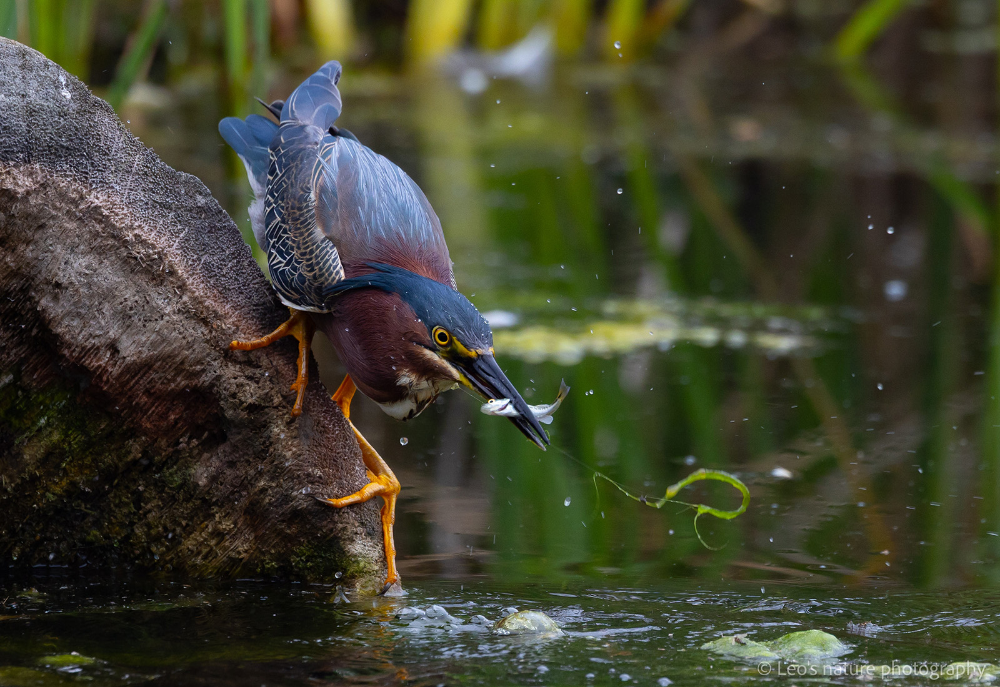

Community Birdwatching
Family birdwatching in San Diego.
Leo organizes family-friendly birdwatching activities in San Diego to help children and parents discover local birds, observe nature, and build curiosity about the natural world.
Ask About Events
Observe • Listen • Record
Birdwatching as nature education.
Activities are designed for families, beginners, and children. Participants learn how to notice behavior, identify local birds, respect habitats, and keep simple nature journals after each walk.